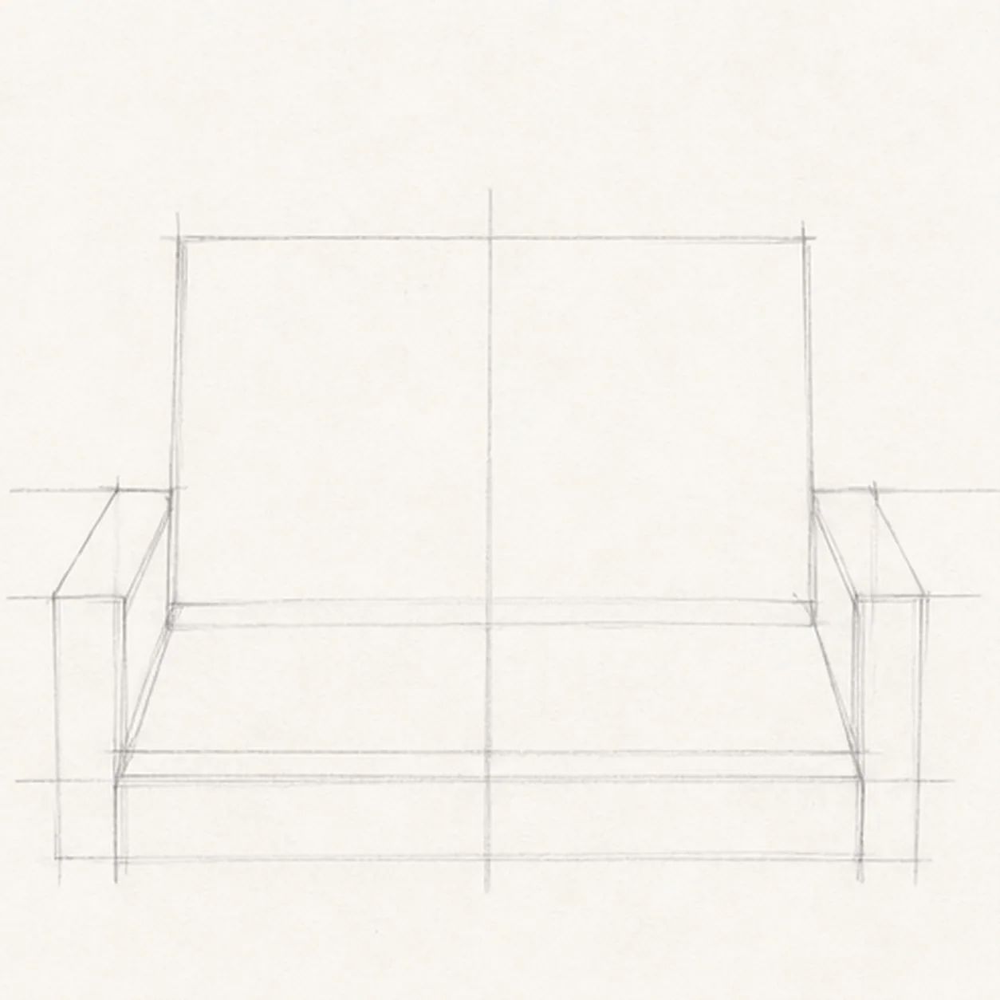
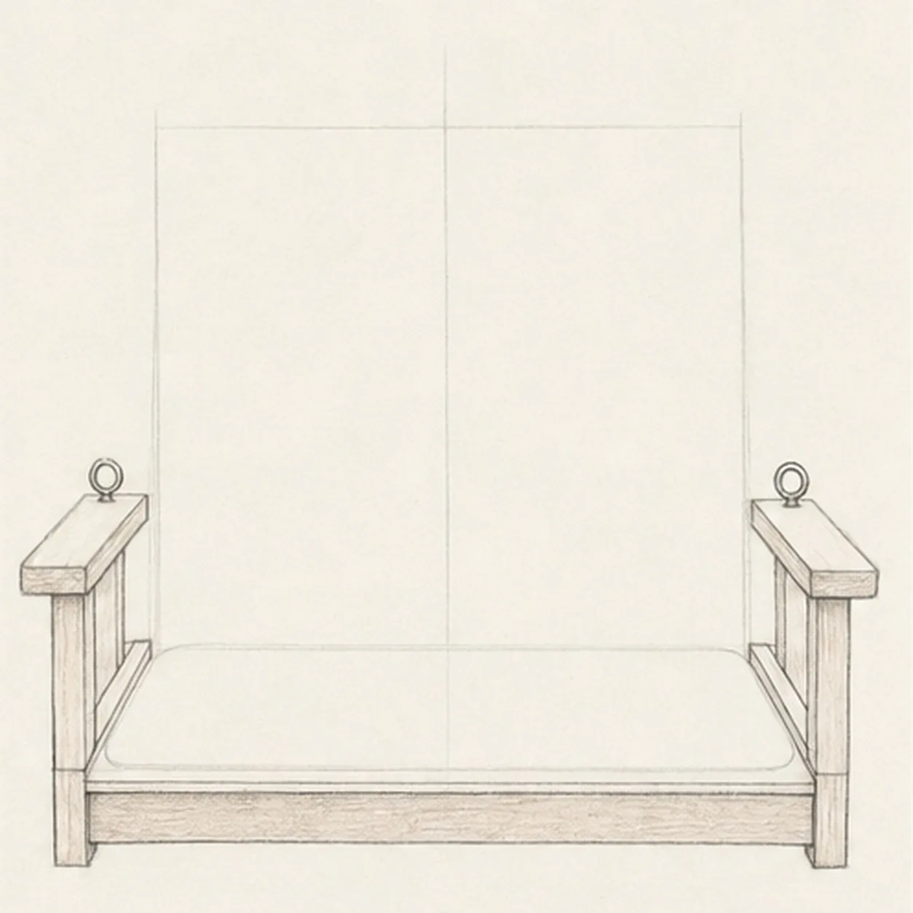
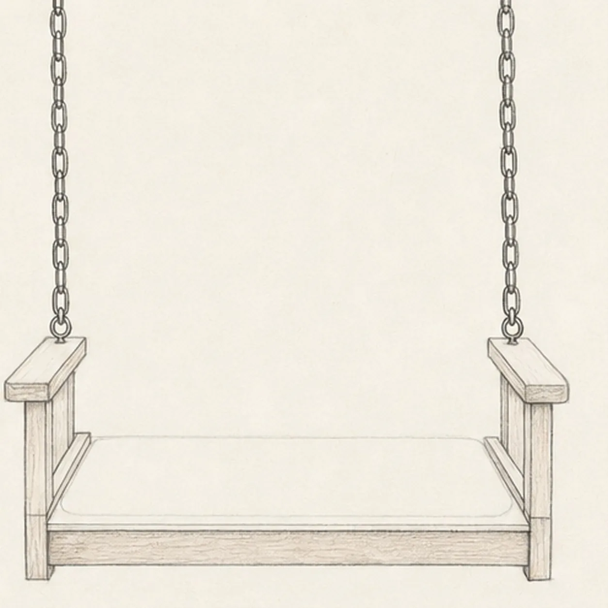
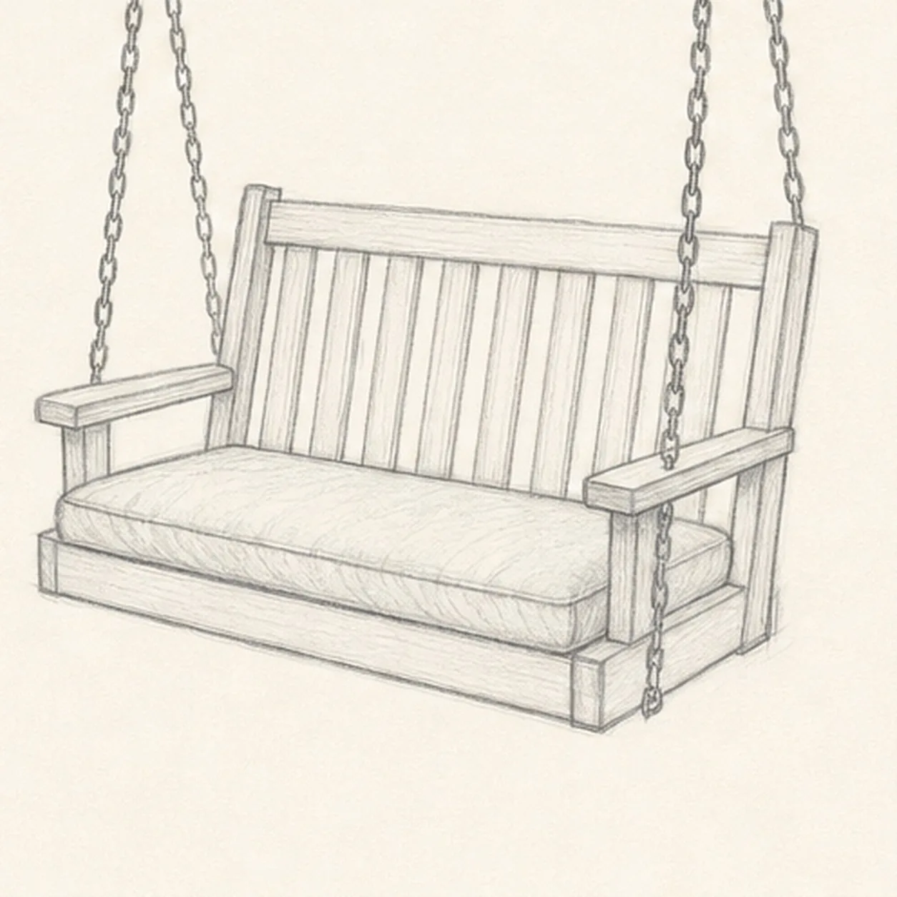
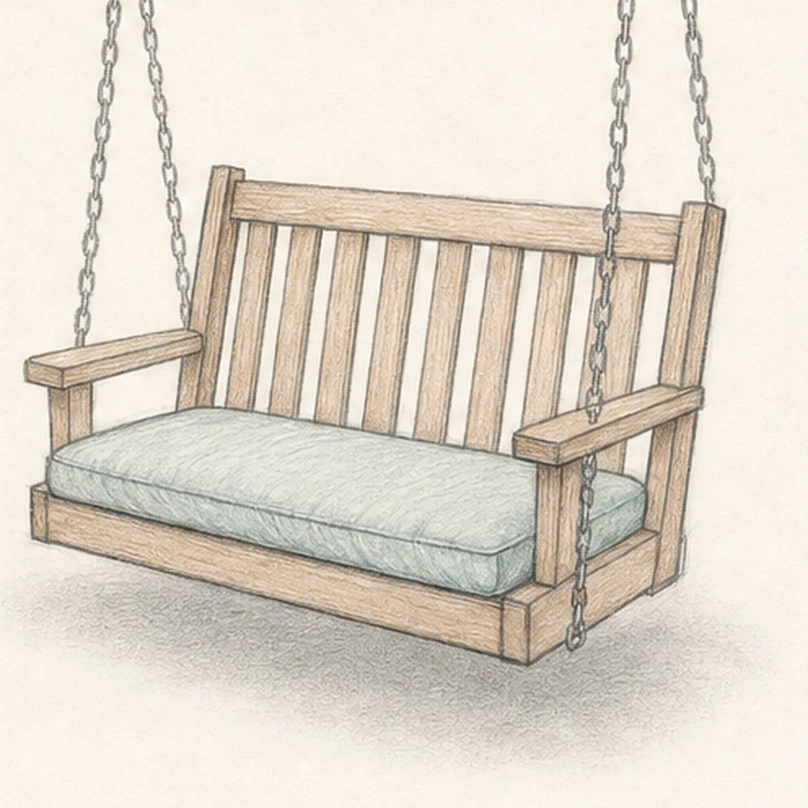

From the archive
Let's draw a porch swing with a cushion
Treat this as one small practice round: build the subject lightly, notice the shapes, then darken only the lines that help the finished sketch.
-
01

Reserve the cushion space
Draw the light outer bench envelope and tall back guide, then reserve a rounded rectangle where the cushion will sit. Add a center axis and mark matching armrest heights, but leave the chains out.
Sketch tip: Treat the cushion guide as a promise about visibility. Any finished line placed inside it now would be covered later, so keep that area empty apart from the pale guide.
-
02

Draw only visible woodwork
Build the front apron below the cushion, the narrow rails at its outer edges, both front supports and armrests, then place one eye-bolt ring on each arm. Do not add seat slats or wood grain beneath the reserved cushion.
Sketch tip: Before darkening a board, ask whether you can still see it in the finished swing. If the cushion will hide it, omit it or leave only the faint construction needed for alignment.
-
03

Add the hanging chains
Drop one vertical chain from above into each established eye bolt, ending the final link at the ring with no chain continuing below the armrest.
Sketch tip: Build both chains a few links at a time and alternate each link's direction. Comparing them in short matched sections helps the spacing stay even.
-
04

Add the cushion and back slats
Commit the soft cushion over its reserved footprint, then build the tall back frame and divide only that visible area into vertical back slats.
Sketch tip: Set the first and last back slat, then fit the others between them. These slats remain visible above the cushion; there is no need to invent a second set underneath it.
-
05

Shade the porch swing
Add pale teal pencil to the established cushion, a restrained brown tint to the exposed wood, and a soft graphite shadow under the swing.
Sketch tip: Pull color strokes along each visible form: lengthwise on the exposed boards and across the cushion's soft plane. Keep some paper showing so the sketch stays light.
-
06

Settle the swing sketch
Strengthen the keeper contours and clarify the established vertical chains, armrest eye bolts, visible back slats, cushion color, exposed wood tone, and shadow.
Sketch tip: Check that each chain stops cleanly at its ring and that no seat detail appears through the cushion. Then stop—the visible frame, slatted back, and one comfortable cushion already tell the whole story.